第221期
トレーディア新聞社
定価 無料
新聞THE TREDIA SHIMBUN
夏季
本日14面
1面総合
全21か国で戦争状態が消える
宣戦控えも一斉に解除
個別の停戦合意は一件のみ 本紙は「天の意志による大停戦」と記す
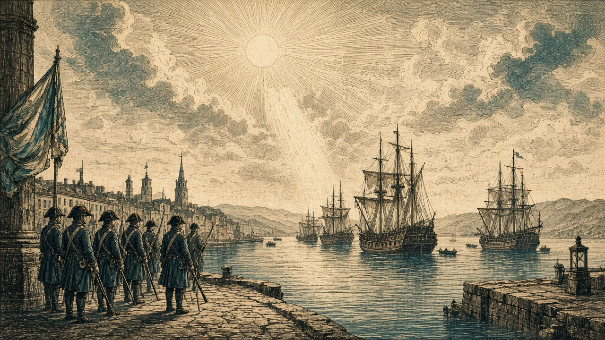
【総合部】第221期末、全21か国の公報から交戦国の記載が消え、開戦を控えていた宣戦も残らなかった。外交記録で確認できる個別の停戦合意は、オラニウム連邦と藍岬共和国連邦の一件だけ。ほかの戦争も同じ期末に終わった。各国の交渉を経ず一斉に戦争状態が解除されたこの異変を、本紙は「天の意志による大停戦」と呼ぶ。
戦争状態が一斉に消える直前まで、各地では戦闘が続いていた。期中の占領や損害は公報に記録され、期末の交戦国欄だけが空になった。戦争の終結は、それまでの戦闘や占領を取り消したわけではない。詳しい戦況は3〜6面で、火災被害は7面で報じる。
前号で告知された黒潮自治国からオリョルッル王国への宣戦（第225期開戦予定）と、オリョルッル王国から藍岬共和国連邦への宣戦（第224期開戦予定）も消えた。いずれも開戦予定日を迎える前の解除である。すでに続いていた戦争と、これから始まる予定だった戦争が、同じ期末に終わった。
各国の受け止め方は分かれた。泰平天国は「天は与え天は奪う」、オリョルッル王国は「せかいへいわ」と表明。黒潮自治国の潮見玄吾議長は「戦争が終わった。次に海路を誰が握るかで、黒潮は譲らない」と評議会で語った。外交上の説明がないまま訪れた終結を、各政府はそれぞれの言葉で迎えている。
| 期末の外交記録 | |
|---|---|
| 交戦国欄 | 全21か国で空欄 |
| 宣戦控え | すべて消失 |
| 記録のある停戦合意 | オラニウム・藍岬の一件 |
| 黒潮→オリョルッル | 第225期開戦予定を解除 |
| オリョルッル→藍岬 | 第224期開戦予定を解除 |
- 2面大停戦の読み方
- 3面テキスタン戦線
- 4面なのです・金野・白波
- 5面藍岬・スルガ
- 6面翠湖・旧蒼森
- 7面火災十一万五千
- 8面相場と鉱山
- 9面国特集 青海
- 10面夏の空
- 11面港あわせの夜
- 12面入門 戦争状態
- 13面短信
- 14面編集後記
2面国際 大停戦
外交
合意記録は一件 戦争状態が全面解除
期末、全21か国の交戦国欄から相手国が消えた
【政治部】通常の停戦では、一方の国が打診し、相手国が受け入れた段階で戦争状態が終わる。第221期末の公報には、その経過が示されていない。個別合意として記録されたのはオラニウム連邦と藍岬共和国連邦の一件だけだが、全21か国の交戦国欄が一斉に空になった。
消えたもののなかには、まだ砲火の交わっていない宣戦控えも含まれる。黒潮自治国が前号でオリョルッル王国へ出した第225期開戦の宣戦、オリョルッル王国が藍岬共和国連邦へ出した第224期開戦の控えも、今期末には残っていない。潮見玄吾議長は評議会で「戦争は終わった。だが黒潮の船をどこへ走らせるかは、我らが決める」と語った。
六つの陣営は第221期末も存続し、加盟国の所属に変化はなかった。戦争状態の解除と同盟の解消は別の記録であり、各国は従来の陣営に属したまま停戦後の外交や軍の再配置に移る。
港と占領地に残る戦後処理
港では民間航路の再開準備が始まり、各国政府は部隊の配置と占領地の管理を見直す。戦争状態が終わったあとも、期中に生じた損害と領地の変化は記録に残る。停戦を各地の行政や輸送の再開へつなげられるかが、次の焦点となる。
| 大停戦で消えたもの | |
|---|---|
| 進行中の戦争 | すべて解除 |
| 黒潮→オリョルッル | 225開戦控えも消失 |
| オリョルッル→藍岬 | 224開戦控えも消失 |
| 期末の交戦国 | 全21国でゼロ |
- 潮見「黒潮の船をどこへ走らせるかは、我らが決める」
- 泰平表明「天は与え天は奪う」
- オリョルッル表明「せかいへいわ」
- カペレナ表明は軍事作戦の文言のまま
3面国際 テキスタン
戦況
泰平、テキスタンの町を占領
海底油田も落ちる
双方の損害 泰平2,000／テキスタン6,900 町と油田は泰平領へ
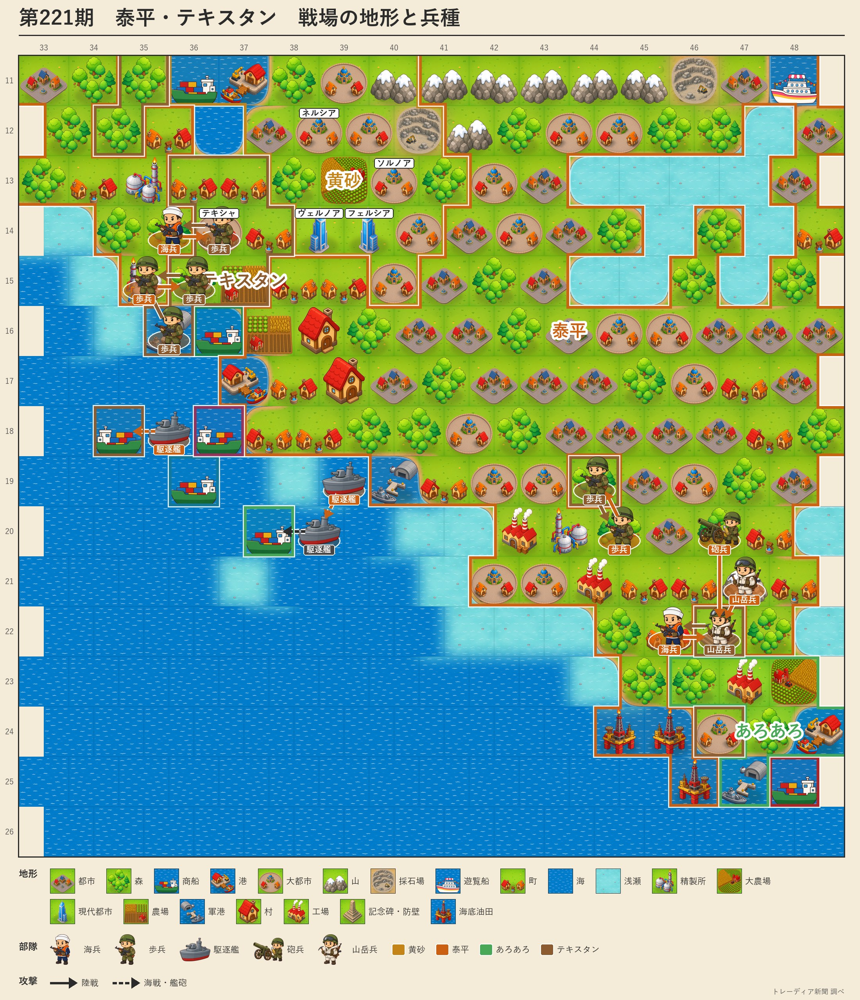
【国際部】泰平天国はテキスタン共和国の町（35,12）と海底油田（46,25）を占領した。人口の集まる町と燃料を産する拠点が同じ期に泰平領となり、テキスタンは陸上の拠点と資源の両方を失った。双方の兵員損害は泰平二千人、テキスタン六千九百人。
首都テキシャ（36,14）周辺でも部隊がぶつかり、泰平の海兵とテキスタン歩兵は攻撃と反撃を繰り返した。南方の山岳兵の陣地（46,22）では泰平砲兵が千二百人を死傷させ、海兵と山岳兵の攻防も続いた。（44,19）では泰平歩兵の攻撃で二千人が死傷し、テキスタン側の反撃は百人にとどまった。首都へ通じる道と山岳陣地の双方に圧力がかかり、守備側は兵の補充と配置を急いだ。
沖合では中立の駆逐艦と泰平の駆逐艦が魚雷を撃ち合い、泰平艦（36,20）が沈没した。テキスタン側の海戦命令は弾薬不足で中止され、陸上戦の援護に艦を出せなかった。泰平は別の駆逐艦を建造し、乗船や魚雷攻撃の指示も続けている。町と油田を押さえた陸軍に対し、海上では補給と艦の損耗が作戦の幅を左右する。
町（35,12）は住民と行政が集まる拠点、海底油田（46,25）は燃料の供給源だ。両地点を失ったテキスタンは、首都テキシャを守りながら、残る地域への物資輸送も組み直す必要に迫られる。泰平軍は占領した町と油田を確保し、補給路を維持できるかが次の焦点となる。
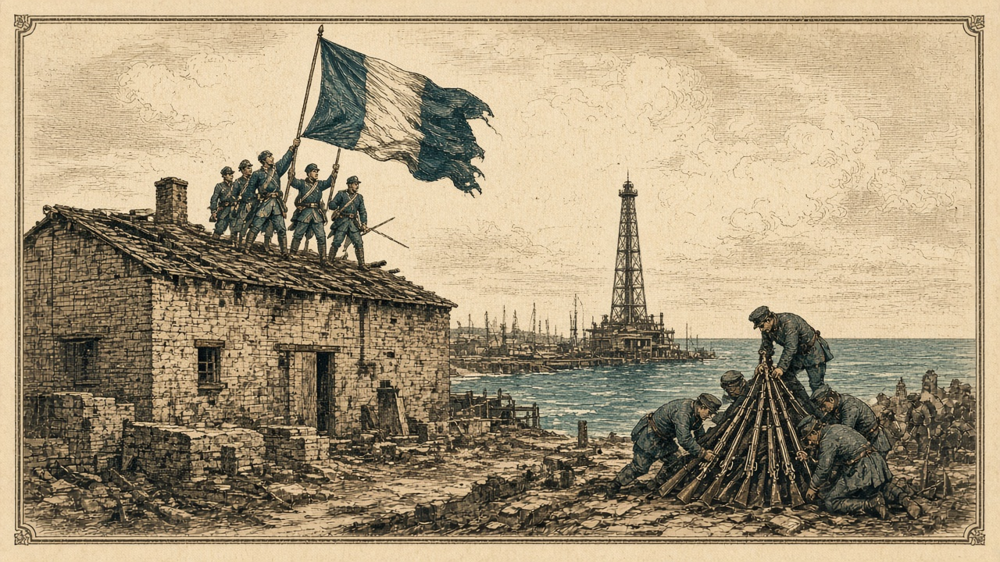
| テキスタン戦線 | |
|---|---|
| 町（35,12） | 泰平が占領 |
| 海底油田（46,25） | 泰平が占領 |
| 損害 | 泰平2,000／テキスタン6,900 |
| 泰平駆逐艦 | （36,20）撃沈 |
4面国際 なのです 金野・白波
戦況
なのです、金野のミサイル基地を占領
白波戦線でも陸上と艦砲が重なる
金野で予備兵1,000投降 白波との損害 なのです7,200／白波4,900
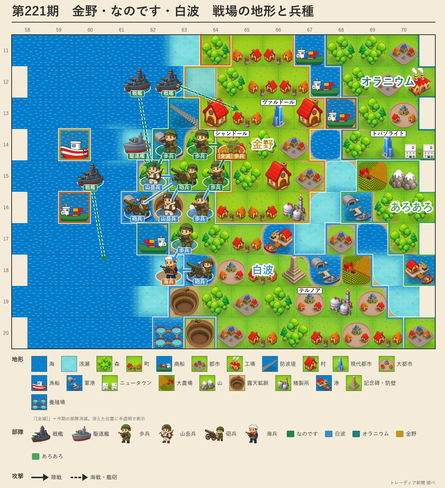
【国際部】なのです主義人民共和国は金野伯爵領のミサイル基地（63,14）を占領し、予備兵千人が投降した。首都シャンドール（64,14）では、なのです軍の歩兵が金野軍Corps2を全滅させ、続く戦闘でも二千百人の損害を与えた。なのです側の損害は百人。基地と首都の間で守備線が崩れ、伯領はミサイル運用の拠点を一つ失った。
沖合の戦艦と駆逐艦は金野の町を砲撃した。（64,13）（66,11）（66,12）（66,14）の人口は合計三千二百人分減少。町の中心部では住宅や倉庫が並ぶ区画にも砲弾が落ち、住民の暮らしと兵站を同時に脅かした。白波王国の軍港（61,16）には二発が命中して破壊され、白波の戦艦と商船も被弾した。港が使えなければ、艦の修理と沿岸輸送の両方に支障が出る。
白波戦線 軍港を失い、沿岸で反撃
白波との陸上戦では、なのです軍が七千二百人、白波軍が四千九百人の損害を出した。白波の砲兵と海兵は沿岸陣地から反撃し、いくつかの地点ではなのです軍を押し返した。白波は四地点で計二万人を予備兵に加え、軍港や前線へ部隊を配置した。失った兵を補い、防衛線の穴を埋める動きだ。
金野伯領の補給
食料8,900トン 基地と町を相次ぎ失う
金野の食料は八千九百トン、人口は八万九千二百人、兵力は三万三千三百人。備蓄は限られ、ミサイル基地を失ったうえ、首都周辺の町も砲撃を受けた。前線の補給と住民への配給に、残る食料をどう振り分けるかが伯領の切迫した課題だ。
西方戦線
なのです軍、チェス領の都市も占領
なのです主義人民共和国はチェス＝シロバキア共和国の都市（77,64）も占領下に置いた。金野・白波方面とは別の戦線で戦果を広げた形だ。今期のなのです軍は金野の基地を押さえ、白波の沿岸を砲撃し、さらに遠方の都市を占領した。各方面で確保した地点を守る兵力をどう配るかが、次の課題となる。
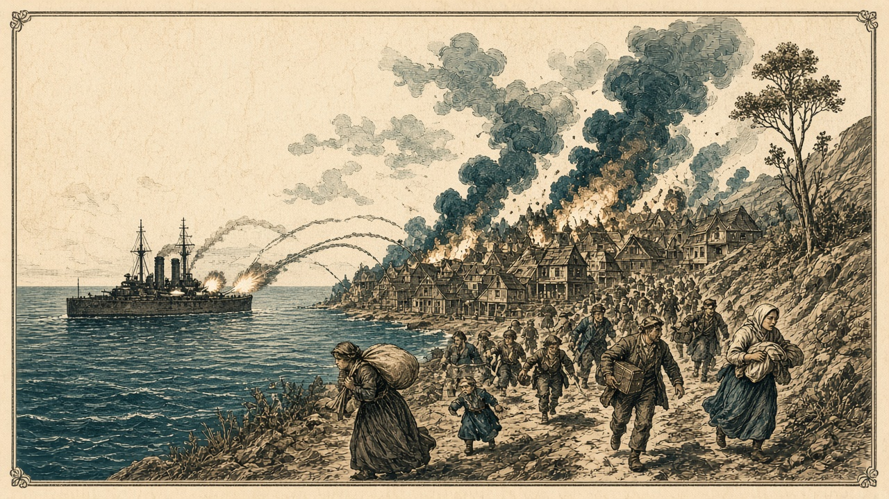
| 北方の数字 | |
|---|---|
| なのです×金野 | 100／2,100 |
| 投降 | 予備兵1,000 |
| 砲撃後の町人口減 | 3,200人 |
| なのです×白波 | 7,200／4,900 |
| 白波軍港 | （61,16）破壊 |
5面国際 藍岬・スルガ
戦況
藍岬・スルガ沿岸で交戦
カペレナ軍と守備隊が衝突
藍岬・スルガ・オリョルッルの各戦線で損害
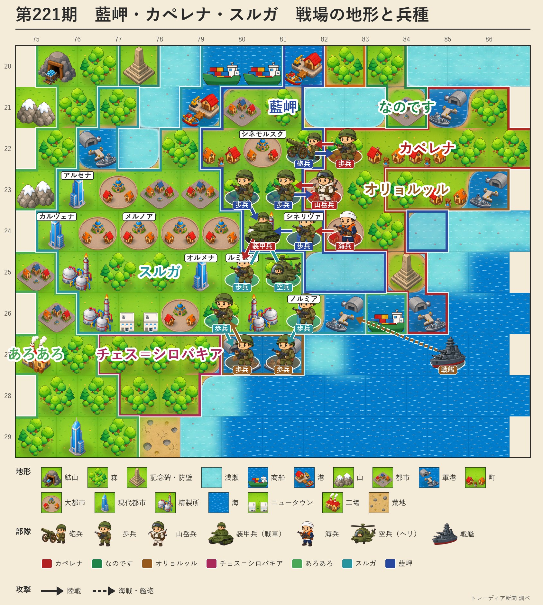
【国際部】藍岬共和国連邦とカペレナ王国の沿岸では、歩兵・山岳兵・海兵が攻守を交替し、双方の兵員損害はカペレナ二千七百人、藍岬五千五百人となった。スルガとカペレナの戦線でも両軍が交戦し、カペレナ千五百人、スルガ二千五百人が損害を受けた。二つの戦線でカペレナ軍が前進を試みる一方、藍岬とスルガは守備隊を維持して応戦している。
スルガ・オリョルッル戦線
スルガとオリョルッル王国の戦線では、スルガ側が五千四百人、王国側が九百人の損害を出した。王国歩兵はスルガ第7軍に三千三百人の損害を与え、反撃を百人に抑えた地点もある。沖では王国の戦艦が沿岸を砲撃した。スルガ軍は各地で兵員を失い、守備隊の補充を迫られている。
人口移動
仕事を求め、スルガから藍岬へ三万人
今期、スルガ島から藍岬共和国連邦島へ、仕事を求める三万人が移住した。藍岬政府は到着者を受け入れた。藍岬の人口は三万九千人で、移住者は現人口の大きな割合を占める。港の荷役や倉庫、修理工場では人手を求める一方、住まいと食料を整える仕事も急がれる。移住者がどの町に落ち着き、どの産業に加わるかで、連邦の暮らしは変わりそうだ。
| 東部沿岸 | |
|---|---|
| カペレナ×藍岬 | 2,700／5,500 |
| カペレナ×スルガ | 1,500／2,500 |
| スルガ×オリョルッル | 5,400／900 |
| 移民 | スルガ→藍岬 3万人 |
- 藍岬 人口3万9,000 兵力7万9,600
- スルガ 人口12万0,100 兵力9万3,100
- カペレナ 艦11
6面国際 翠湖・旧蒼森
戦況
翠湖首都で守備部隊が壊滅
湖陽は州領に残る
翠湖の損害3,600／オリョルッル200
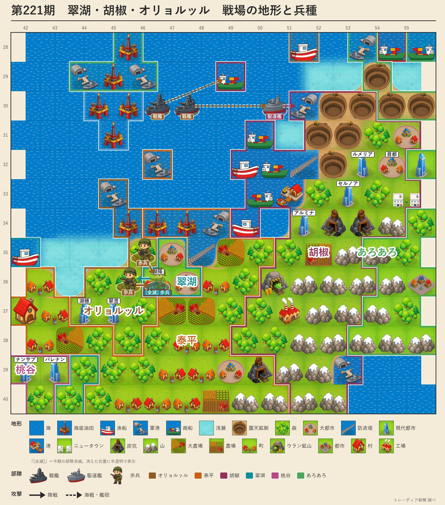
【国際部】オリョルッル王国の歩兵は翠湖自治州の首都・湖陽（46,36）で翠湖の歩兵部隊を全滅させ、続く攻撃で二千七百人を死傷させた。翠湖側の反撃は百人規模にとどまり、期末の損害は王国二百人、翠湖三千六百人。湖陽は翠湖領に残り、自治州は部隊を置き直して守備を補った。人口一万一千四百人、領土五区画の州にとって、首都の部隊壊滅は防衛線の再編を迫る打撃となった。
湖陽の守備再編
湖陽の市街を守る隊は交戦で崩れたが、州政府は直ちに部隊を配置し直した。オリョルッル軍は首都を占領しておらず、次の攻撃に備えた守備の立て直しが続く。複数国との戦線を抱える翠湖は、兵を湖陽に集めるか、他の守備地点を固めるか、限られた兵力の配分を迫られている。
胡椒商船二隻が被弾
沖合ではオリョルッルの戦艦が（49,29）（50,30）へ砲撃し、胡椒帝国の商船二隻が損傷した。胡椒の駆逐艦も魚雷を撃ち返した。商船は沈没を免れたものの、修理と航路の調整が必要になる。戦艦の砲撃が続けば、同盟国の輸送船は荷を届ける時刻や寄港先を見直さざるを得ない。
旧蒼森周辺
カペレナ、工場と平地を占領
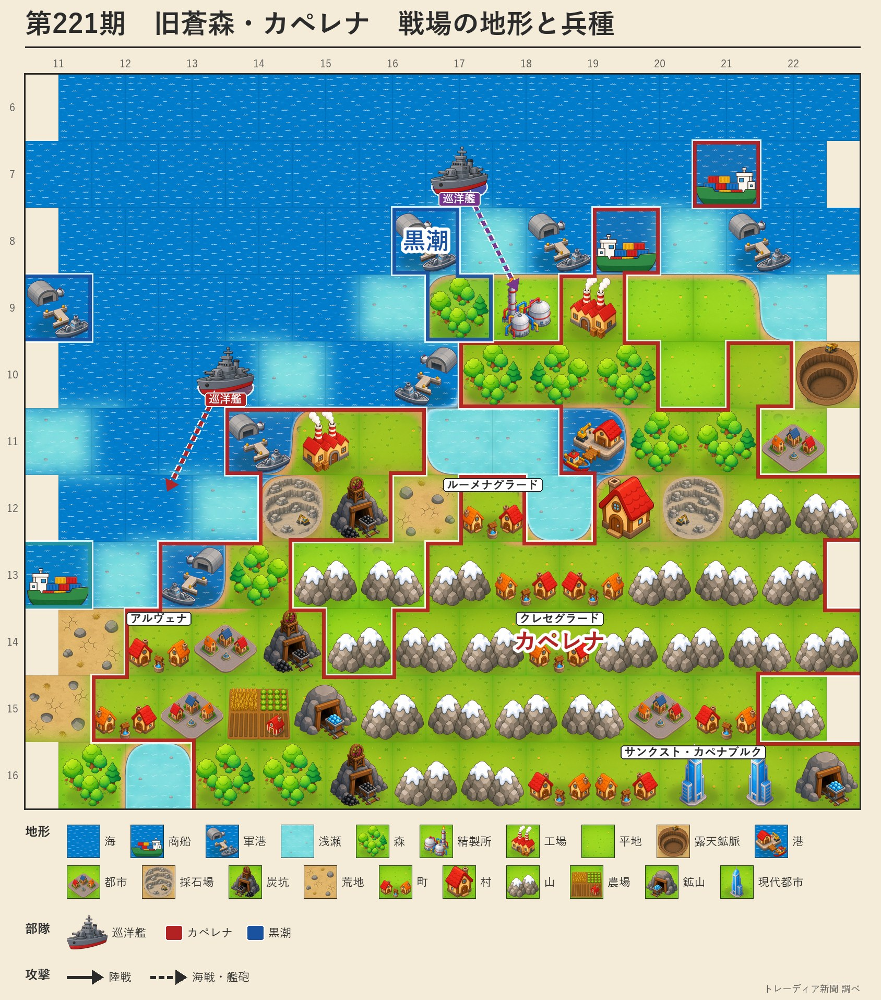
旧蒼森ではカペレナ王国が中立の工場（19,9）と平地（21,10）を占領した。シンジケート連邦の巡洋艦は（18,9）へ砲撃し、同海域への一斉攻撃も命じた。オリョルッル王国は荒地（18,24）を占領した。中立地の占領が重なり、旧蒼森では各国の支配地が広がる。黒潮自治国は四区画を保ち、軍港周辺でカペレナと向き合う。
| 西部・中部 | |
|---|---|
| オリョルッル×翠湖 | 200／3,600 |
| 翠湖首都 | 湖陽 維持 |
| 胡椒商船 | 損傷2 |
| 工場（19,9） | カペレナ占領 |
| 平地（21,10） | カペレナ占領 |
| 荒地（18,24） | オリョルッル占領 |
7面社会 火災
災害
火災29件 死者11万5,200人
なのです3万2,000 泰平2万5,200 チェス1万6,500
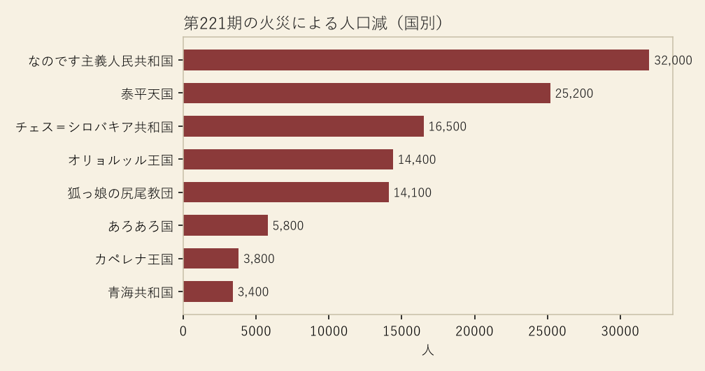
【社会部】今期の火災は二十九件、死者は十一万五千二百人に達した。なのです主義人民共和国が三万二千人、泰平天国が二万五千二百人、チェス＝シロバキア共和国が一万六千五百人。オリョルッル王国は一万四千四百人、狐っ娘の尻尾教団は一万四千百人を失った。上位五か国だけで十万二千二百人に上る。
なのですでは電都周辺の町や都市を含む八地点で火災が起き、人口減少は計三万二千人。泰平でも天都寄りの大都市や地方の町七地点が焼け、二万五千二百人の減少となった。チェスでは四地点で一万六千五百人。火元が別々の町に広がり、消防組は人員と水車を分けて出すことになった。焼け跡の片付けは、家財の運び出しと道路の確保から始まる。
あろあろ国では五千八百人、カペレナ王国では三千八百人、青海共和国では三千四百人の人口が火災で減った。青海の火元は町（49,53）。港の主要施設から離れた住宅地で、住民は焼け残った道具や衣類を探している。セルヴァナでは荷役が続く一方、内陸の被災地へ木材や屋根材を送る手配が始まった。
第220期は火災十五件、死者五万九千四百人だった。今期は二十九件へほぼ倍増し、死者も五万五千八百人増えた。期末に戦争状態が消えても、焼けた家や失われた働き手の穴埋めは各地に残る。
8面経済・国土
相場
弾薬8.60 航路は青海が首位
【経済部】弾薬の世界相場は8.60で横ばい。燃料は約8.07、鋼鉄は約7.60。航路数は青海共和国が千三十一で首位、なのです主義人民共和国八百八十一、カペレナ王国六百十七が続く。火薬や鉄材の値が大きく動かないなか、各国は船便を使って食料や資材を市場へ出している。 前号との比較では、青海は千二十七から四航路、なのですは八百七十二から九航路、カペレナは六百七から十航路増えた。航路数の増加に合わせ、港では燃料や鋼材の積み荷を扱う便も増えている。市場で確保した資材をどの港へ先に届けるか、船主と商人は出荷日程を詰める。
競売には商品・鉱石・石材・石油・木材・食料が並び、青海、白波、胡椒、テキスタン、黄砂、シンジケート、翠湖などが出品した。次の締切は第222期から第226期にかけて順次到来する。シンジケートは食料五百八十六単位、翠湖は六百単位を出品した。余剰品を市場へ出す国がある一方、買い手は締切ごとに必要量を見定める。
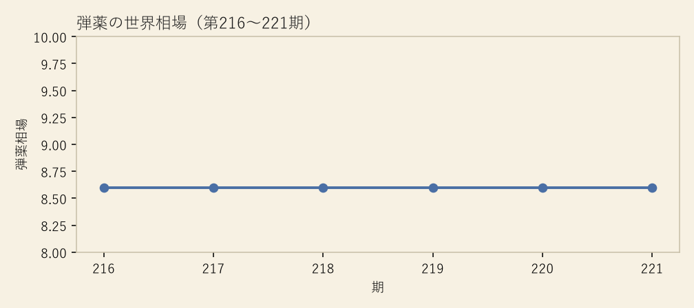
国土・資源
教団の鉱山で落盤 備蓄396単位を損失
狐っ娘の尻尾教団の鉱山（40,47）で落盤が発生し、開発段階は二から一へ低下した。貯蔵資源三百九十六単位も失われた。採掘場の復旧には坑道の安全確認と支柱の組み直しが要る。教団は今期、他国との交易で上位に入り、輸出を支える鉱山の損傷は次期の出荷計画にも影響しそうだ。
競売には食料、石材、鉱石などが並んだ。備蓄の売買と生産設備の稼働状況が、各国の次期出荷を左右する。
9面国特集 青海共和国
国特集
セルヴァナの朝 納期と麦茶
人口25万2,600 航路1,031で首位 同盟軍の盟主
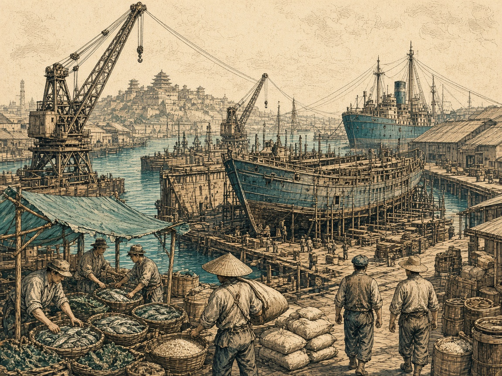
【特集部】青海共和国の首都セルヴァナでは、夜明け前に荷役が始まり、桟橋食堂には麦茶の湯気が立つ。船員は到着時刻を分単位で告げ、造船工は必要な鋼板の枚数を帳面に書く。港の仕事は、荷を降ろす順番、修理に回す船、次の便の出港時刻を互いに確かめながら進む。青海は「海運と重工業の共和国」を掲げ、今期の航路数は千三十一で世界首位だ。
人口は二十五万二千六百人、兵力二十一万五千七百人、領土四十九区画。艦船は九隻。同盟軍の盟主として胡椒帝国、シンジケート連邦、黒潮自治国と同じ陣営に属する。航路数の多さを支えるのは、穀物、鋼材、油の積み荷をさばく岸壁と、船を待たせない荷受けの手順だ。
埠頭の帳場では荷札を積荷別に分け、取り違えを防ぐため二人で品名と数量を読み合わせる。ある倉庫番は「船が着く時刻より、荷札の数字を一つ間違えない方が難しい」と笑う。船の整備では鋼板の厚さを検査し、溶接痕を水で洗って漏れを確かめる。納期を守る工場と、荷を待つ市場の距離が近いことが、セルヴァナの産業を支えている。
夜勤食堂では貝と豆の煮込みに麦飯を添え、柑橘入りの茶を出す。食堂は交代勤務の合間に船員、職工、荷役係が顔を合わせる場所でもある。進水式の日には槌の音が通りに響き、工場の人々は新造船の船名と最初の積荷を話題にする。青海の暮らしは海だけでできているのではない。鋼材を加工し、品を数え、次の便を待つ日々が、港町のリズムを作る。
青海の艦船は九隻、航路数は千三十一。数値の首位を支えるのは、船を出す人だけでなく、岸壁を整える職人や市場へ荷を届ける運び手だ。セルヴァナでは早番の荷役が夜明けとともに動き出し、次の船の到着を待つ。
| 青海共和国 | |
|---|---|
| 人口 | 25万2,600人 |
| 兵力 | 21万5,700人 |
| 領土 | 49区画 |
| 艦船 | 9 |
| 航路 | 1,031（首位） |
| 陣営 | 同盟軍（盟主） |
| 首都 | セルヴァナ（46,50） |
- 港あわせ
- 桟橋食堂の麦茶
- 燻製魚と貝豆煮
- 納期を分で言う会話
10面気象
実況
夏の空 晴れ1,997 曇り5,004
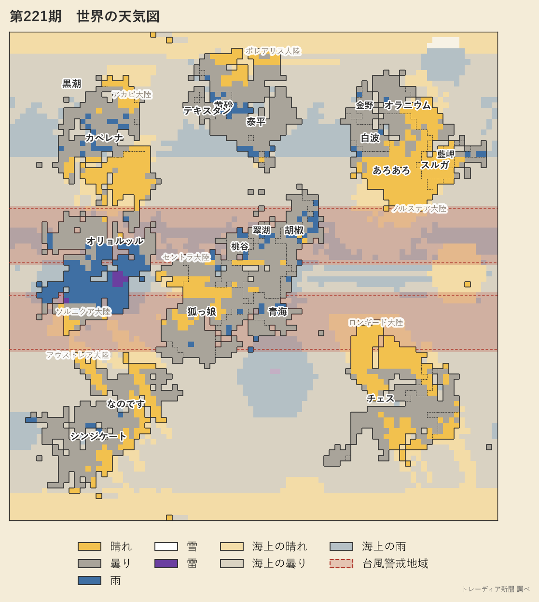
【気象部】今期の天候マスは晴れ一千九百九十七、曇り五千四、雨一千七十六、雪十一、雷十二。全八千百マスのうち曇天が約六割を占める。前期より晴れは三十四増、曇りは五十六減、雨は六十増えた。夏季の地図には台風警戒帯も示され、沿岸の港は出帆前の見回りと入港予定の確認を続けている。 雪は山地の一部に限られ、雷は局地的な発生にとどまった。雨域の増加は農地の水には恵みとなるが、未舗装路を使う荷車や河岸の積み替えには遅れを招きやすい。市場へ穀物を運ぶ商人は、空模様と道の状態を見ながら出立を決めている。
見通し
第222期の天気予報
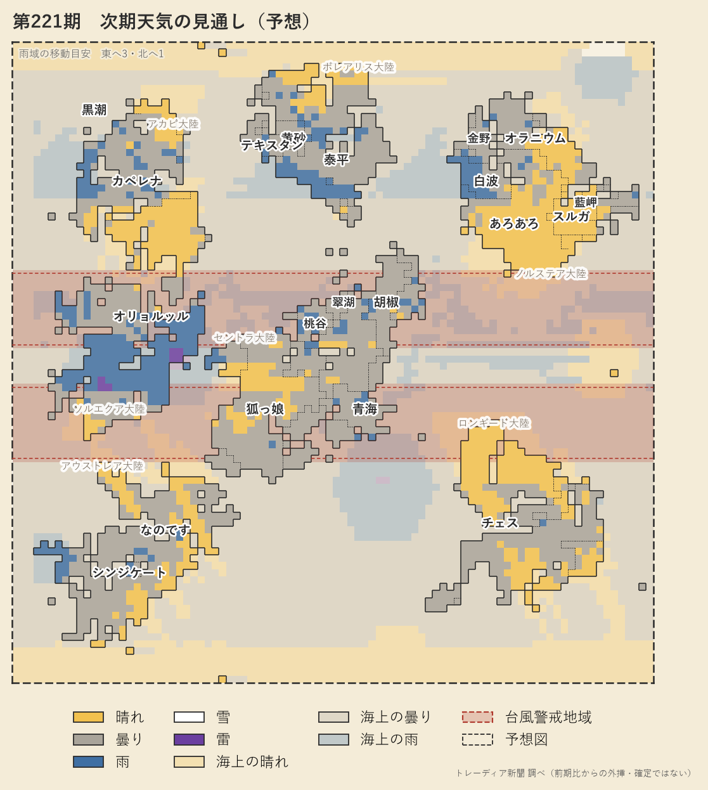
第222期は、雨域が前期に比べて東へ三マス、北へ一マス移る見通しだ。予報図には季節の台風警戒帯が重ねられている。帯に近い港では、見張り台から風向や波の通報を受け、船の出帆時刻と避難先を確かめる。荷役場では穀物袋や火薬樽を屋内へ移し、岸壁の綱と係留杭を点検する。海流図も合わせて見れば、船が受ける流れと天候を踏まえた航路を選びやすい。
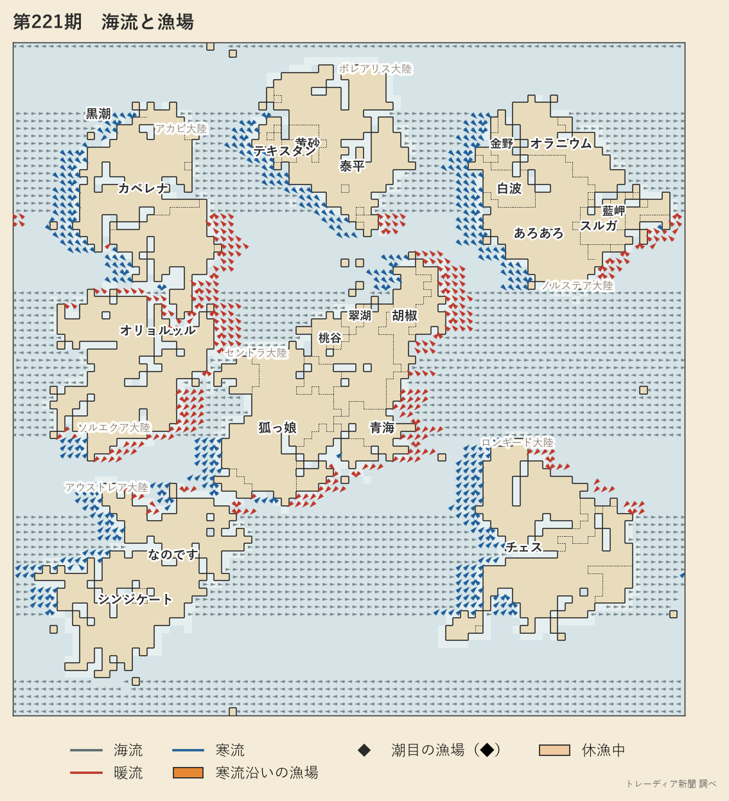
11面文化
祭り
セルヴァナ 港あわせ灯籠の夜
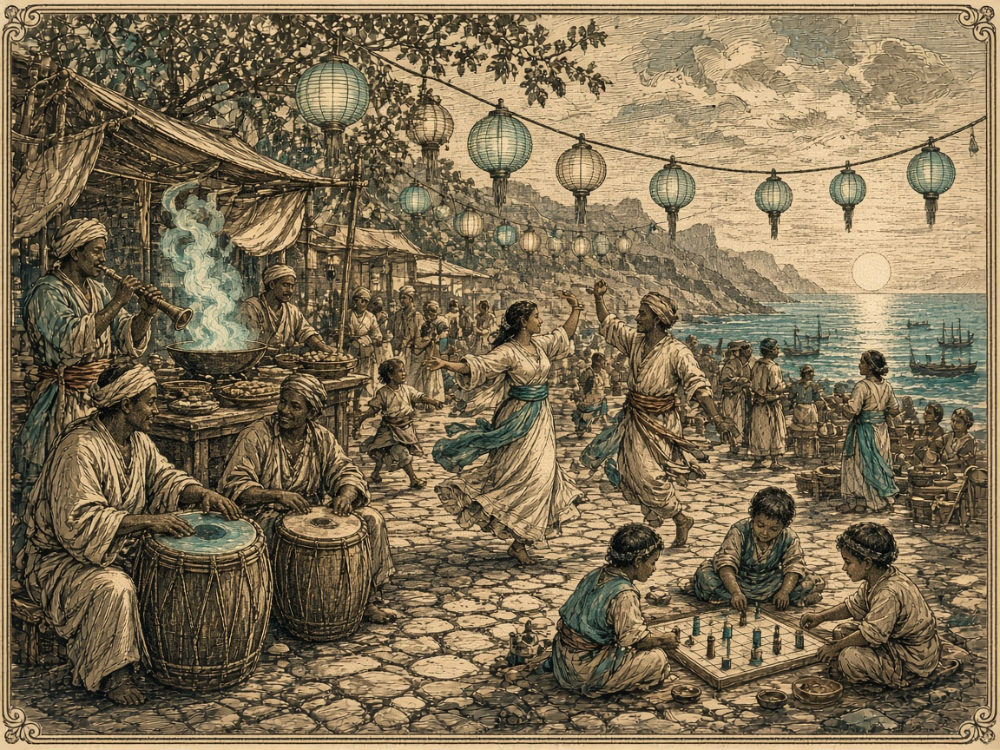
【文化部】青海・セルヴァナの市場通りでは、今期も港あわせの灯籠夜が開かれた。四人用の盤に木の駒を並べ、参加者は荷を運ぶ順を読み合う。地域ごとに駒の進め方が少し違い、開始前には常連同士がルールを確かめた。勝った側が麦茶を奢り、負けた側が次の便の遅延を予言するのが、港の作法だ。
太鼓と笛が混じるなか、子どもたちは盤の端で駒の数え方を覚えた。燻製魚の串が回り、柑橘の茶を片手に、船員と市場の商人が荷の到着時刻を話し合う。盤の一局は勝敗がつくまで続き、観客は手番の遅い人に「次の便が出るぞ」と声をかける。祭りの夜も、港町の会話は時刻と荷の数に戻っていく。
灯籠は市場通りだけでなく、食堂の入口や木工房の軒先にも下げられた。駒を削った職人は、盤の角を丸くして子どもの手に当たらないよう仕上げる。参加者が増えた年には、近隣の町から持ち込まれた盤を並べ、各地の遊び方を一晩ずつ試したという。
灯籠が消えるころ、造船所の早番が歩き始め、盤は倉庫の棚へ戻る。翌朝にはまた荷役が始まるが、勝負の記録を帳場に貼り出す店もある。灯籠夜は一晩の遊びであると同時に、市場の人々が顔を合わせ、次の季節の便や祭りの日取りを決める場になっている。 市場組合は祭りの収益から、盤を並べる広場の灯油と太鼓方への謝礼をまかなう。遠方から来た船員が持ち込んだ遊び方を、地元の子どもが覚えて帰ることもある。港あわせの名は、荷を合わせる港の仕事と、異なる町の人が一つの盤を囲む夜の両方に由来するという。
- 四人用・地域ルールあり
- 勝者は麦茶を奢る
- 駒は港の木工房製

セルヴァナ 桟橋茶舗
盤のあとに、一服。
麦茶・塩豆。
青海・セルヴァナ
12面入門講座
入門第69回
戦争状態と大停戦
交戦国欄が空になるとき
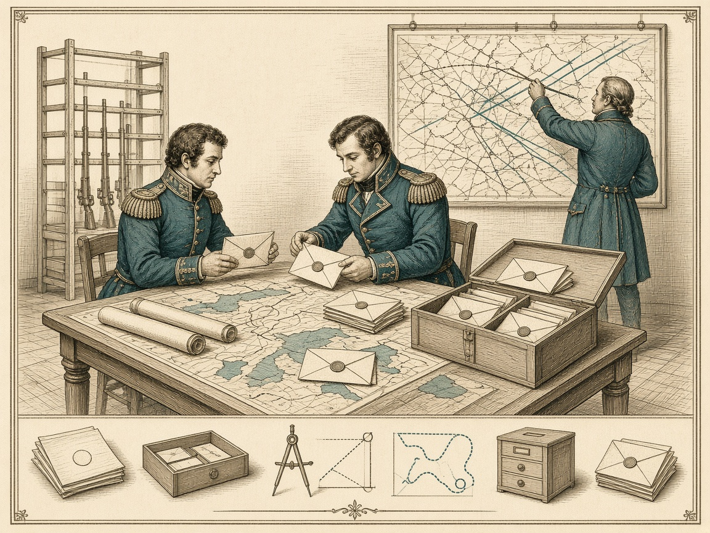
【編集部】国ごとの交戦国欄には、いま戦争状態にある相手国が出る。相手の名があるあいだは、陸上攻撃や艦砲がその戦争の戦闘として扱われる。欄から名前が消えるのは、ふだんは停戦合意が成立したときだ。
通常の停戦は、一方が打診し、相手が応じたときにだけ成立する。打診だけの段階では欄は残る。宣戦控えは、将来の期を指定して開戦を待つ記録で、控えのあいだも周辺の別戦争は動きうる。黒潮の対オリョルッル宣戦やオリョルッルの対藍岬控えは、そうした型だった。
今期の大停戦は、その型に当てはまらない。打診と承諾の列が各国に並ぶのではなく、期末に交戦国欄がすべて空になった。宣戦控えも残らない。本紙はこれを天の意志による大停戦と呼ぶ。陣営の所属や政府表明は残り、交戦国欄だけが空になった。
読み方の手順は次のとおりだ。①期末の交戦国欄が空かどうかを見る。②同じ期の戦闘ログは、占領と損害として別に読む。③大停戦のあとも、陣営と艦隊の配置は残る。戦闘の記録と戦争状態の解除を混ぜないと、紙面の見通しが立てやすい。
- 交戦国欄＝いまの戦争相手
- 通常の停戦は打診と承諾
- 全21か国で交戦国欄が空になる
- 戦闘ログは別に追う

諸国算盤店
空欄の珠も、確かめる。
算盤・台帳。
各地の算盤店
13面短信
大停戦 期末、全21国の交戦国がゼロ。宣戦控え（黒潮→オリョルッル225、オリョルッル→藍岬224）も消失。本紙は天の意志による大停戦と記す。
停戦合意 オラニウム×藍岬の個別合意一件と、全21か国の同時解除が記録された。
泰平×テキスタン 町（35,12）と海底油田（46,25）が泰平領。兵員損害は泰平2,000／テキスタン6,900。沖合では泰平の駆逐艦が沈没。
なのです×金野 ミサイル基地（63,14）を占領し、予備兵1,000人が投降。兵員損害はなのです100／金野2,100。艦砲後、周辺四町の人口が計3,200人分減少。
なのです×白波 兵員損害はなのです7,200／白波4,900。白波軍港（61,16）は二発の命中で破壊され、白波の戦艦と商船も損傷。
白波×泰平 兵員損害は白波400／泰平2,700。白波軍は海兵隊を含む泰平部隊へ砲兵と歩兵を投入した。
カペレナ×藍岬 兵員損害はカペレナ2,700／藍岬5,500。藍岬は三地点で反撃し、守備隊を再配置。
カペレナ×スルガ 兵員損害はカペレナ1,500／スルガ2,500。スルガは部隊設置と徴兵を進めた。
スルガ×オリョルッル 兵員損害はスルガ5,400／王国900。王国歩兵はスルガ第7軍に大きな損害を与え、戦艦も砲撃。
オリョルッル×翠湖 兵員損害は王国200／翠湖3,600。首都湖陽は翠湖領に残り、自治州は守備部隊を置き直した。
移民 仕事を求めるスルガ島民3万人が藍岬共和国連邦島へ移住。藍岬政府が受け入れ。
チェス都市 なのです軍がチェス＝シロバキア共和国の都市（77,64）を占領。
旧蒼森 カペレナが工場（19,9）と平地（21,10）、オリョルッルが荒地（18,24）を占領。シンジケート巡洋艦は（18,9）へ砲撃。
胡椒商船 王国戦艦の砲撃で二隻が損傷。胡椒の駆逐艦は魚雷で応戦。
火災 二十九件、人口減少の集計は十一万五千二百人。なのです、泰平、チェスの三国で七万三千七百人。
落盤 教団鉱山（40,47）は段階2から1へ低下し、貯蔵資源396単位を損失。
画面 版1.87.1。今期の機能更新はなし。
電都 夜灯茶房
号外のあとに、静かな一杯。
麦茶・干し柿。
なのです・電都
14面編集後記
第221期末、全21か国で戦争状態が消え、宣戦控えもなくなった。外交記録に残る個別の停戦合意は一件だけである。各国間の交渉記録を伴わない一斉解除を、本紙は「天の意志による大停戦」と呼ぶ。
戦闘は期末まで続き、泰平はテキスタンの町と海底油田を占領、なのです軍は金野のミサイル基地を確保した。藍岬・スルガ・翠湖でも兵員損害が出て、火災による人口減少は十一万五千二百人に達した。終結の知らせは、今期に生じた被害や領地の移動を帳消しにはしない。
陣営の所属は続いている。戦闘停止と同時に、同盟関係や占領地の境界まで整理されたわけではない。政府には、前線への命令伝達、捕虜の処遇、占領地の管理、港と町の復旧を具体的に示す責任がある。
一斉解除の理由は公報から読み取れず、停戦条件も各国でそろっていない。交戦国欄の空白を安定した平和へつなぐには、軍同士が守れる取り決めと、それを確かめる手順が欠かせない。次号は各国が示す停戦後の措置を追う。